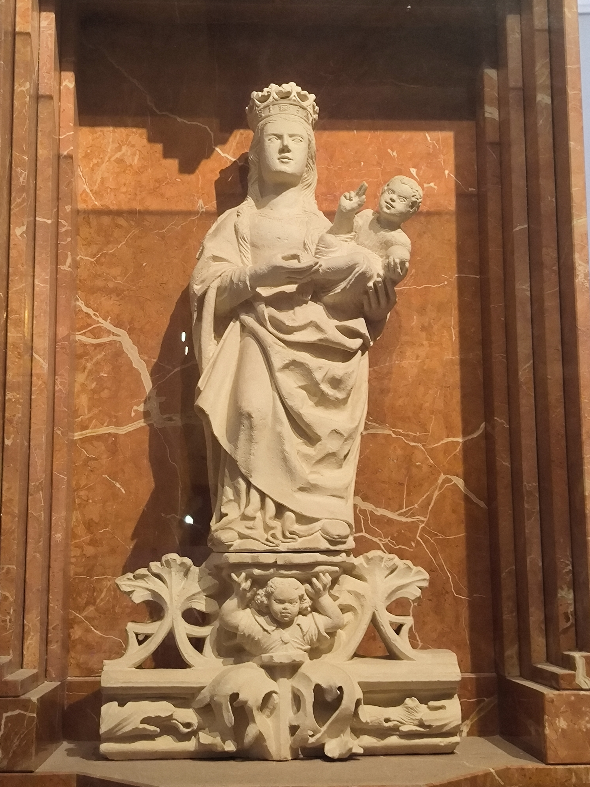
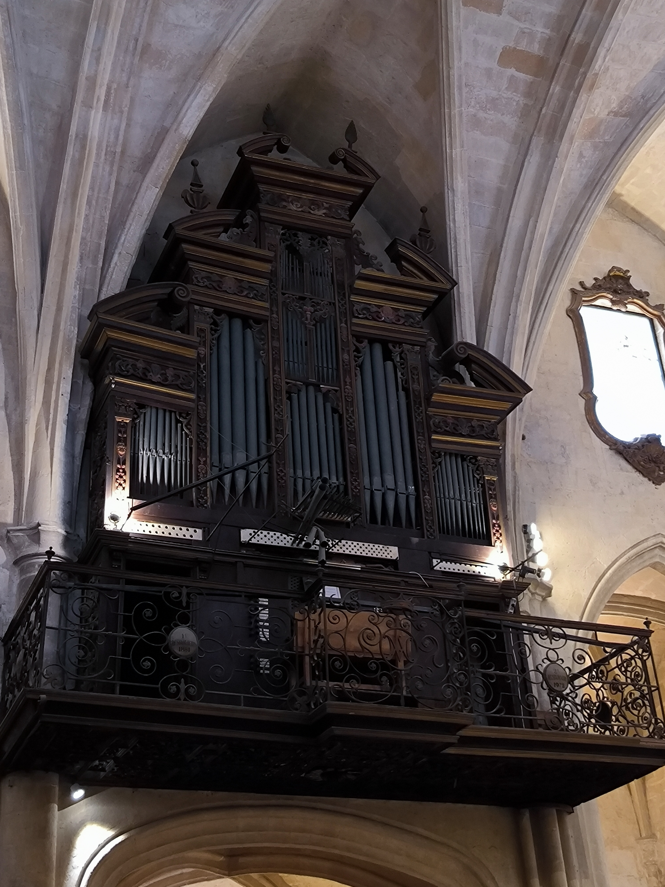
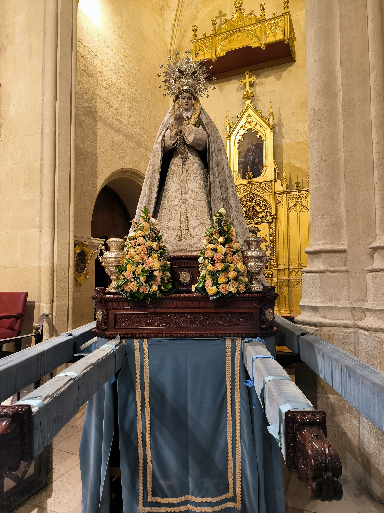
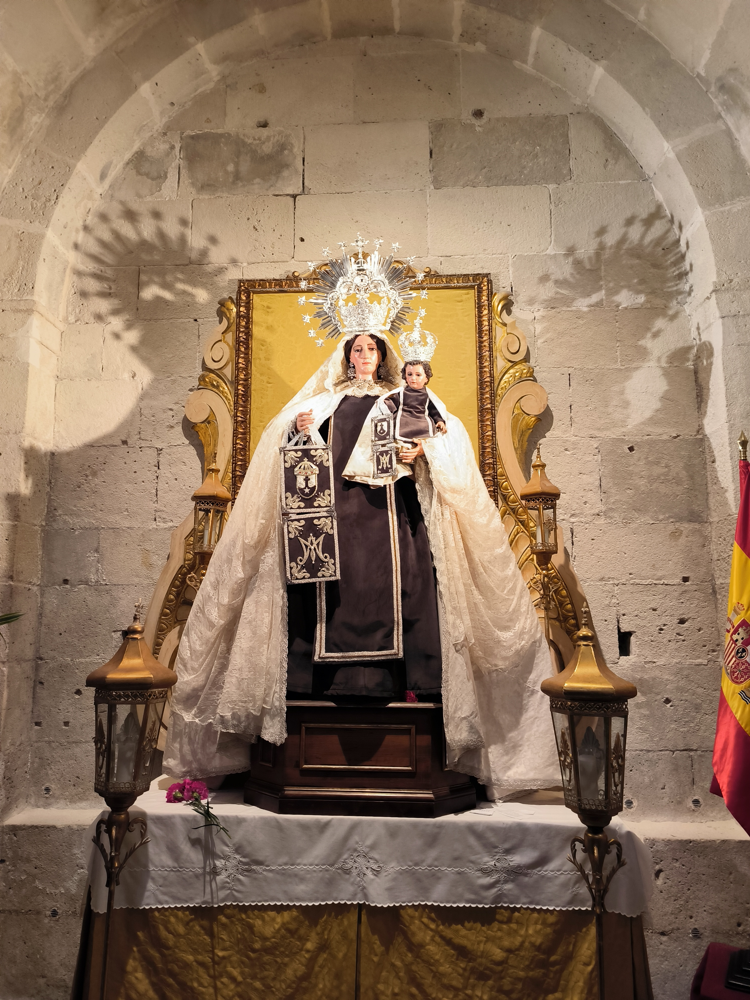
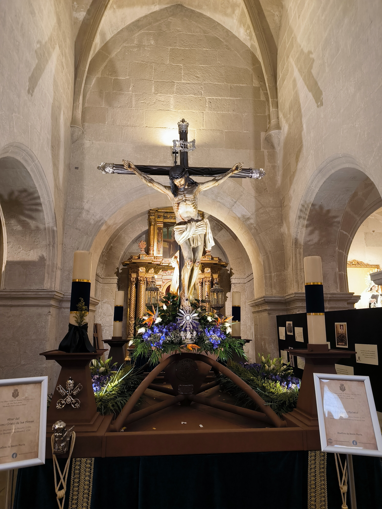

Semana Santa en Alicante en 11 fotos
Una secuencia breve de imaginería, dorados, silencio y preparativos captada en una visita de tarde.
Las once imágenes más recientes de esta serie construyen una mirada cercana a la Semana Santa en Alicante: altares, pasos, dolorosas, un órgano oscuro suspendido sobre la nave y la mezcla de devoción, patrimonio y trabajo previo a la calle.

La Semana Santa alicantina tiene una forma muy precisa de ordenar la mirada. Antes de la calle, antes del sonido, antes del paso completo, están los interiores: la piedra clara, la madera oscura, el oro encendido y las imágenes esperando su momento.
Estas once fotos no intentan resumir toda la celebración. Funcionan mejor como una crónica breve de proximidad: detalles de capillas, tronos en preparación, dolorosas bajo palio y crucificados que ya contienen, incluso en reposo, toda la tensión visual de la Semana Santa.
Una visita de cerca
Lo que aparece aquí es una mezcla de recogimiento y taller vivo. Hay composiciones terminadas y otras donde se cuelan la escalera, las protecciones o las cajas. Precisamente por eso la serie tiene interés: muestra no solo la estampa final, sino también la materia real que la sostiene.



El peso visual de los pasos
En Alicante, como en tantas ciudades del arco mediterráneo, la tradición no depende solo de la devoción. También descansa en una cultura visual muy elaborada: bordados negros y plata, respiraderos trabajados, candelabros, flores medidas y una arquitectura interior que hace de marco escénico.
Las fotos muestran eso con bastante claridad. Cada paso tiene una lógica distinta. Algunos aparecen casi terminados. Otros revelan el trabajo previo, la preparación, el ajuste fino antes de salir.




Devoción y patrimonio
Hay algo especialmente potente en esta serie: la convivencia entre patrimonio histórico y tiempo presente. El oro, la talla, la piedra y los tejidos antiguos siguen activos, no como decorado, sino como dispositivos de memoria colectiva.
Por eso estas fotos funcionan bien como entrada de blog. No buscan la panorámica turística ni el gran resumen. Prefieren la cercanía, el detalle, la materia y la forma en que la Semana Santa se prepara y se deja mirar dentro del templo.



How did this post make you feel?
Pick one reaction: